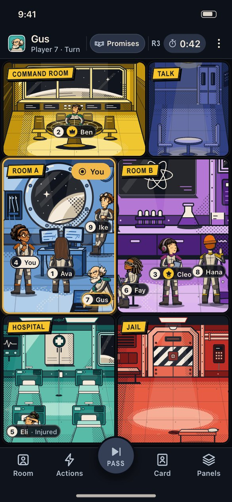
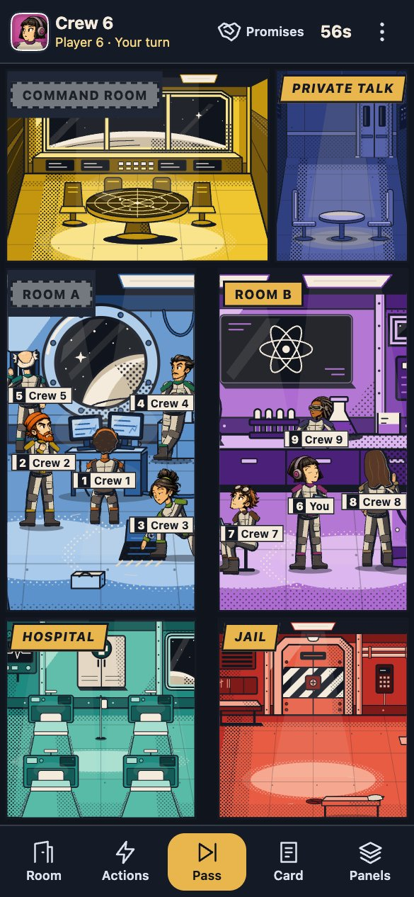

The whole board sheet 26
11 November 2026: Same The same layout, and the first tab reads “Room”.


How each side was drawn
The pack: /design/phone-ui/prototype/index.html?s=board&safe=47%2C34
The build: /?scenario=board&count=9&tuple=phone, then [["tap","#planet-nav-board"],["wait",900]]